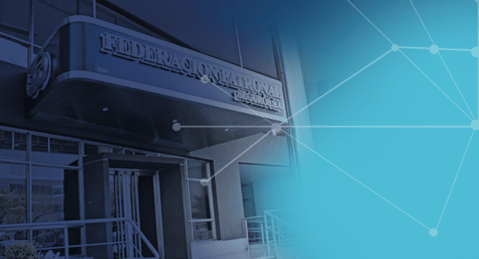

¿Qué tipo de cobertura necesitas?
VEHÍCULOS
Protección completa para tu auto, moto y más.
PERSONAS
Cobertura de salud, accidentes personales, y más.
EMPRESAS
Protección integral para tu comercio y actividades empresariales.

Protección completa para tu auto, moto y más.
Cobertura de salud, accidentes personales, y más.
Protección integral para tu comercio y actividades empresariales.
El seguro de Accidentes Personales brinda protección al asegurado en caso de muerte o incapacidades permanentes sean totales o parciales, sufridas en ocasión de un accidente.
Destinado a personas que por su ocupación o profesión independiente realizan actividades laborales de forma autónoma. También pueden contratar estas pólizas aquellas personas que tengan personal a su cargo en forma transitoria. Cubre a los asegurados durante la actividad laboral y el trayecto in itinere (Se encuentra incluido el uso de moto durante el trayecto in itinere).
Es un seguro destinado a personas que por su ocupación o profesión independiente realizan actividades laborales de forma autónoma con protección durante las 24Hs.
Turismo Estudiantil es un producto especialmente diseñado para cubrir a las Agencias de Viajes, por los accidentes que sufran los pasajeros de viajes de fin de estudios. Turismo Alternativo es un producto que cubre a los operadores turísticos por los accidentes que sufran los turistas durante la realización de las excursiones organizadas por ellos.
Un seguro diseñado para cubrir a Clubes, Asociaciones de Fomento, Escuelas Deportivas, etc. por los accidentes que sufran las personas que practican deportes amateur dentro de sus establecimientos.
Contá con la ayuda económica para solventar el tratamiento de una enfermedad grave, lesión o intervención quirúrgica que se pueda presentar. Te damos la posibilidad de elegir la cobertura de salud que más se ajusta a tus necesidades y a tu presupuesto, contando además con un servicio de asistencia médica de urgencias y emergencias. Comunícate con nuestros productores y comenzá a disfrutar de la tranquilidad de estar respaldado por la aseguradora número uno en situación financiera del país.
Protección completa y adaptable a la necesidad de cada persona. Se puede elegir libremente una, varias o todas las coberturas gracias a la flexibilidad de este producto.
Además cuenta con el servicio prestacional para Urgencias y Emergencias médicas:
Protección específica para la población de adultos mayores y sus necesidades personales.
El Seguro de Retiro es la opción ideal para aquellas personas que buscan complementar su futura jubilación con un ingreso adicional que les permita vivir mejor a la edad de su retiro.
Se trata de un producto diferencial y financieramente accesible, que cuenta con cinco planes que se adaptan a las necesidades de cada asegurado, dos de los cuales cuentan con la posibilidad de contratar la cobertura de Vida, adicionalmente al ahorro.
Visitá: https://www.fedpat.com.ar/seguro-de-retiro/
Brinda una protección para sus seres queridos ante una pérdida repentina del sustento familiar, como así también mitigar los efectos producidos ante una invalidez y/u otras enfermedades. Pensado para brindar una protección esencial a la medida de cada necesidad, pudiéndose elegir la moneda y la forma de actualización del capital asegurado. También se puede optar por tres planes de cobertura.
Te ofrecemos cobertura contra Robo de identidad, orientada al reintegro de los gastos incurridos para revertir la situación de sustracción de la identidad, con el fin de limitar los eventuales perjuicios económicos. Podes elegir entre una amplia variedad de coberturas, que van desde la pérdida económica directa hasta los honorarios profesionales por demandas, juicios, mediaciones, etc.
Cubre el reintegro de los importes afectados a consecuencia del robo de identidad, amparando también los gastos legales y todos los gastos razonables en que incurra el asegurado a fin de recuperar su identidad.
Asegurá tu patrimonio con el seguro de Responsablidad Civil Profesional, frente a reclamos de terceros que se deriven de la realización de tu actividad profesional.
Pueden ampararse todas las especialidades médicas de profesionales que cuenten con el título profesional y matriculación correspondiente, como así también técnicos y auxiliares de la medicina (técnicos radiólogos, enfermeros, instrumentistas, técnicos ópticos y otros técnicos y auxiliares de la Salud.)
Pueden cubrirse otras profesiones siempre y cuando sea de carácter universitario y/o esté sujeto a una regulación legal, como, por ejemplo: martillero, corredor inmobiliario, docente, agrimensor, maestro mayor de obras, técnico, despachante de aduana, asistente/trabajador social, licenciado en seguridad e higiene, etc.
Asegurá tu personal con el respaldo de la aseguradora número uno en situación financiera. Desde 1921 amparando los accidentes laborales, contamos con áreas especializadas que brindan un adecuado asesoramiento y una eficaz gestión de los riesgos y accidentes de trabajo.
Te ofrecemos una solución totalmente flexible para proteger los bienes de tu oficina, negocio o industria. Este seguro se adapta al tamaño de tu empresa y al sector y tipo de actividad, ya sea minorista, mayorista o de servicios. Tu negocio es tu principal fuente de ingresos, tenerlo seguro, es mejor.
Asegura tu carga de aquellas pérdidas que puedan sufrir durante el transporte terrestre, marítimo, y/o aéreo. Te ofrecemos cobertura para viajes locales, importaciones o exportaciones. Disfrutá de la tranquilidad de que tu mercadería está respaldada por la aseguradora número uno en situación financiera del país.
Protegé tus equipos electrónicos, maquinarias, equipos médicos o trabajos de construcción y montaje con el respaldo de la aseguradora número uno en situación financiera. Comunicate con nuestros productores para conocer los detalles de cada cobertura.
El mejor seguro con la mejor compañía: Nuestros clientes nos respaldan, somos la compañía con más vehículos asegurados en Argentina. Desde hace más de 100 años, brindamos una cobertura para cada tipo de necesidad. El mejor respaldo para tu auto está acá.
Un producto desarrollado para coleccionistas y restauradores de autos clásicos, antiguos o fanáticos de los Hot Rod. Pensamos en las mejores coberturas para este interesante hobby.
Ahora, con la cobertura Integral para motovehículos, estas mejor protegido. Podes contar con un seguro que cubre todos los riesgos a los cuales estas expuesto como motociclista.
Vos cuidas el planeta, nosotros te cuidamos a vos y a tu monopatín. Ecomovilidad es moverse sin dañar el medio ambiente. Movete tranquilo con una cobertura integral, combinando seguros responsabilidad civil, robo, accidentes personales y salud.
Disfrutá al máximo tu pasión por el ciclismo con tranquilidad: descubrí nuestro Seguro Integral para Ciclistas.
Ponemos a tu disposición una cobertura integral para aquellos negocios dedicados a la gastronomía en camiones o trailers adaptados como locales comerciales para la venta de comidas, bebidas, helados, etc. Desarrollamos un conjunto de coberturas pensadas específicamente para cubrir todas tus necesidades.
ic. Marcos Javier Brassini
1º de Mayo 1513 - Casilda - Santa Fe
Cel. (03464) 15528114
Whatsapp: 3464528114